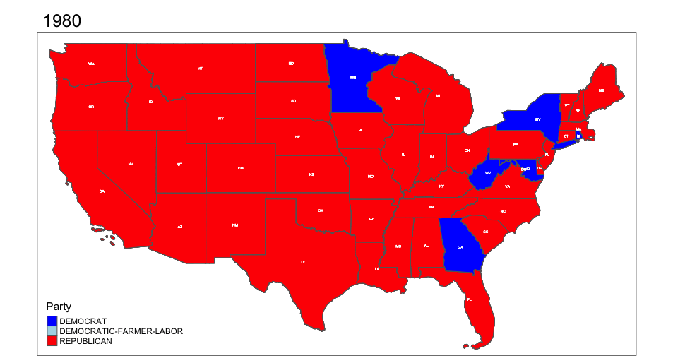

In this analysis, in honor of election season this year we will take a look at some trends in the political landscape of the United States. in order to do this we will need some reliable data sources on which we can base out analysis. This includes historical election results and also, some crucial shape files for visualizations. Sources include the MIT election lab as well US Census TIGER shape files.
Task 1 & 2
In order to properly and efficiently work with the data we must automate the download process, considering there a multiple files that need to downloaded. Using a for loop and using the variable format method sprintf we can automate the download of each file dynamically accounting for i. In the second download we use if else statements to account for the changes in the URLs.
Code
### DATA ONE house_votes <-read_csv("1976-2022-house (1).csv")pres <-read_csv("1976-2020-president.csv")### DATA TWO CONGRESSIONAL BOUNDRIESlibrary(httr)for (i in94:112) { BASE_URL <-"https://cdmaps.polisci.ucla.edu/shp/" zip_file <-paste0("districts", sprintf("%03d", i), ".zip") # Adjusts the format to three digits# Check if file existsif (!file.exists(zip_file)) { FILE_URL <-paste0(BASE_URL, zip_file)print(FILE_URL)# downloaddownload.file(FILE_URL, destfile = zip_file,mode ="wb") # Use appropriate method if needed }}
Code
for (i in2014:2022) { BASE_URL <-"https://www2.census.gov/geo/tiger/"if (i >=2018) { #### accounting for changes in the cd# file <-paste0("TIGER", sprintf("%d", i), "/CD/tl_", sprintf("%d", i), "_us_cd116.zip") } elseif (i >2015) { file <-paste0("TIGER", sprintf("%d", i), "/CD/tl_", sprintf("%d", i), "_us_cd115.zip") } else { file <-paste0("TIGER", sprintf("%d", i), "/CD/tl_", sprintf("%d", i), "_us_cd114.zip") } download_name <-paste0("TIGER",sprintf("%d",i),".zip")# Check if file existsif (!file.exists(download_name)) { FILE_URL <-paste0(BASE_URL,file)print(FILE_URL)# downloaddownload.file(FILE_URL, destfile = download_name,mode ="wb") }}
TASK 3: Party & Seat Changes
In this task we take a look at how the number of seats change over time for the states. This is an interesting analysis as it also points to how the population of a state changes over time, from 1976 to 2022. You can see below that Texas gains the most seats, and New York lost the most amount of seats.
In addition to this I’ve also included a plot to show how the number of seats for each party changes across time. Interestingly, the trends in the changes of party reflect the recent election, and in some ways the shift in political climate.
Code
seats_won <- house_votes %>%group_by(state, year,district) %>%slice_max(candidatevotes,n =1) %>%select(year,state,district,party, candidate,candidatevotes)### TASK 3 PARTY CHANGES AND SEAT CHANGE library(ggthemes)house_votes %>%group_by(year,state) %>%mutate(num_seats =n_distinct(district)) %>%#couting the seats via districtungroup() %>%select(year,state,num_seats) %>%filter(year==2022|year ==1976) %>%group_by(state) %>%mutate(diff_seats = num_seats -lag(num_seats)) %>%# subtracting the newer value from the older via lag functionfilter(year==2022) %>%# this gives up the "lagged" values since the older values will not have a diff via the lag methoddistinct() %>%arrange(desc(abs(diff_seats))) %>%#ordering by biggest differece by absoulte valuehead(25) %>%#ploting aboveggplot(aes(x = state,y = diff_seats,fill = state))+geom_bar(stat ="identity",width =1)+theme_clean()+theme(legend.position ="FALSE")+labs(title="Changes in Seats of the House of Representatives by State", x="State", y ="Change in Seats")+coord_flip()
Code
library(ggthemes)seats_won %>%group_by(year,party) %>%drop_na() %>%mutate(party_seats =n()) %>%ggplot(aes(x = year,y = party_seats,color = party))+scale_color_manual(values=c("DEMOCRAT"="blue","REPUBLICAN"="red","DEMOCRATIC-FARMER-LABOR"="darkgreen","INDEPENDENT"="lightblue"))+geom_line(linewidth =1.2)+theme_minimal()+theme(legend.position ="bottom",legend.text =element_text(size =5))+labs(title ="Party Seats by Year ", x ="Year", y="Number of Seats ", color ="Party")
Fusion Fusses
In the state of New York, there is a fusion ticket system that allows for candidates to be put under more than one party line. This creates an interesting dynamic that allows for candidates to win even though they did not have the max number of votes in their respective parties. In order to solve this problem we will first compute who actually won the district, and then compute who had the highest single party votes. In non-fusion system there would be only one party allowed per candidate, so we can assume that the candidate with the highest single party votes would have won. After computing those two values (see code below), we return a table where the highest single party votes does not match the actual winner. We see below that as a matter a fact, multiple times the candidate with the highest single party votes does not always win due to the fusion system.
Here we answer the question of whether or not there is a difference in votes in the congressional candidate and the presidential candidate of the same party. In this analysis I found certain cases where the congressional candidates had slightly more votes than the presidential, however the average difference across the years has actually been increasing.
When it is necessary to repeat a process over and over again it might be beneficial to create a function that is written once and can be used quickly again, or even automated. In this case we will make a function that can take any zip file, and receive its shape file. See below with a download and unzip along with a quick plot of the boroughs.
Using some of the methods previously stated and a new method I will introduce shortly we can plot the US election of 2000, which many consider to be a very controversial election.
This new method involves using a cowplot that allows us to ggdraw multiple different plots over each other. This will be very beneficial when plotting the US because the geographic locations of Hawaii and Alaska make a simple plot extremely ugly. This process involves filtering out the 2 states and creating a “main” plot as seen in the code below, and then plotting those 2 states separately. Once this is done we can use the ggdraw function to join them all together and tinker with the x, y, width, and height to get a nice looking plot (note: 0 is the center)
Task 6: Animating Party Changes in States During Presidential Elections
In this task we can use the tmap package to create an animated plot of party changes across time. For simplicity sake I have left out the 2 states previously mentioned (my apologizes to the Alaskans and Hawaiians). This graph is great representation of the “swing states” that we always hear being talked, as we see clearly some states will stay stay blue or stay red and others will constantly change. Another great insight from this time lapsed data is the ever changing trends in the political landscape. It might be obvious that party preferences differ every year in America but at times it can be hard to step outside current time frame and realize this is just a moment in a space where preferences are always shifting, and that feeling of “America is becoming all right” or”America is becoming all left” is simply not true.
In 1980 and 1984 you can see that the whole of America was pretty much red. If you were around for those two elections I’m sure it would feel as though there is some paradigm shift in America, but If you wait a bit you can see the rise in blue states, and again if you wait a bit longer you can see that red makes a come back. These trends come in waves, as the data shows, and no matter how much it feels as though one party is has lost touch with America forever, sure enough there will be a comeback.
Code
library(tools)parties <- pres %>%mutate(state =toTitleCase(tolower(state))) %>%filter(state !="Hawaii"& state !="Alaska"& year >=1980) %>%inner_join(bushVgore, by =c("state"="NAME")) %>%#bushvgore is the shape filegroup_by(state,year) %>%mutate(state_winner = party_detailed[which.max(candidatevotes)]) %>%ungroup()### facetmaplibrary(tmap)tmap_mode("plot")###ANIMATING THE FACETanim <- parties %>%filter(year >=1980) %>%st_as_sf() %>%tm_shape() +tm_polygons("state_winner", title ="Party", palette =c("REPUBLICAN"="red", "DEMOCRAT"="blue","DEMOCRATIC-FARMER-LABOR"="lightblue")) +tm_facets(along ="year", free.coords =FALSE)+tm_text("state_po", size = .3, col ="white", fontface ="bold")#tmap_animation(anim, delay = 100,"anim_map.gif")
Code
knitr::include_graphics("anim_map.gif")

Task 7: Electoral Method Analysis
In this section we am to understand how the different methods can effect the out come of the presidential election. For this section my code is quite long so I wont go into details of each part of the code, but essentially Ive computed the winners based on each method and displayed the results in a dt::datatable(). With WTall representing Winner take all and SPW representing the State Proportional Wins we can see how the candidates differ. If we were to select a candidate based on National Candidate Votes you can see that we would have had a different president in 2000.However, based on number of Winner Take all and SPW, the results would be the same.